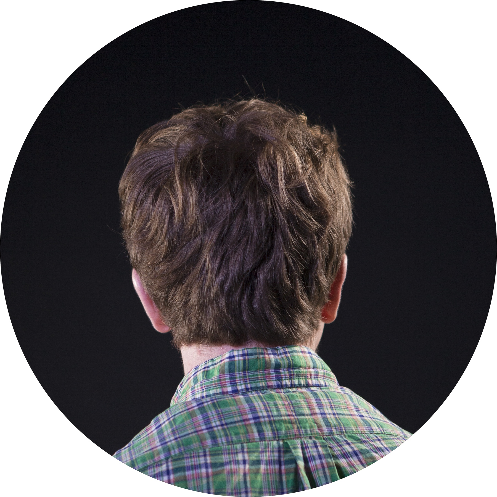

All the world’s a stage, and all the men and women merely players. We so rarely put down our masks and exhibit the side that we’re not so proud of—how does knowing our darker secrets change the way we are seen?
Frustration with how long it takes to get to know someone—spending the first few weeks chatting in their psychological entryway, with each subsequent conversation like entering a different anteroom, each a little closer to the center of the house—wishing instead that you could start there and work your way out, exchanging your deepest secrets first, before easing into casualness, until you’ve built up enough mystery over the years to ask them where they’re from, and what they do for a living.
“adronitis”, dictionary of obscure sorrows
I'm worried that I'm a terrible child to my parents. I'm independent from them to a fault, and I talk to them once a week and try to get off the phone as soon as possible. They've done so much for me, and I'd never want my kids to be like that — why am I like that?
I’m pro-life. That’s because when my mom was pregnant with me, a doctor told her that she should abort me because I would be born with Down’s syndrome.
And now I’m at Notre Dame, becoming a doctor.
I don’t know if I fit into the traditional Hispanic culture, or with the “mainstream” American one. I’m not really a part of the Latino group on campus, perhaps because I don’t speak Spanish as fluently? I’m not international, but I feel like I don’t belong to the white American culture either. It’s strange, being stuck in the middle.
It’s taken a long time for me to stop doubting the friendships I’ve formed at Notre Dame, and I’ve begun to suspect why. I attended a small Catholic school from kindergarten to eighth grade, and my class had just 30 kids in it. I had only two close friends. Unfortunately, both of my friends had other friends in the class and I really didn’t, and when push came to shove, they often chose others over me. I still have vivid memories of one of them turning me into a punchline at my own birthday party. It was heartbreaking to repeatedly see my only friends make fun of me to make them seem cooler.
For a long time, I thought all friendships worked that way; I think some part of me still does.

redacted per request
I’m actually pretty afraid about moving to the Bay Area. I’m not sure I fit in, or want to fit in, with all the tech culture. I’m worried if I stay there too long, I’ll miss my chance to settle down and live the life I want.
I don’t feel like China is my home anymore. I don’t know where home is.